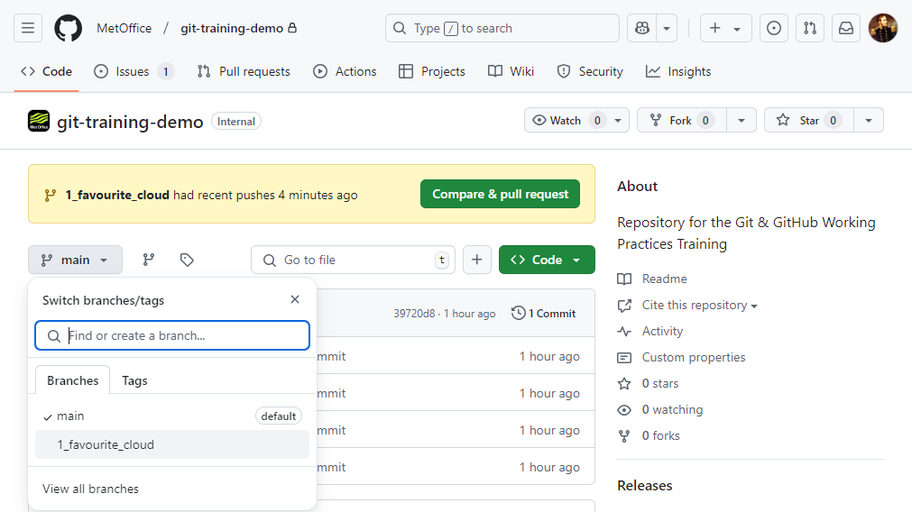
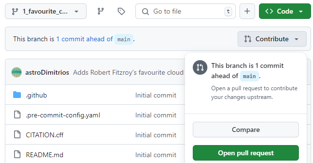
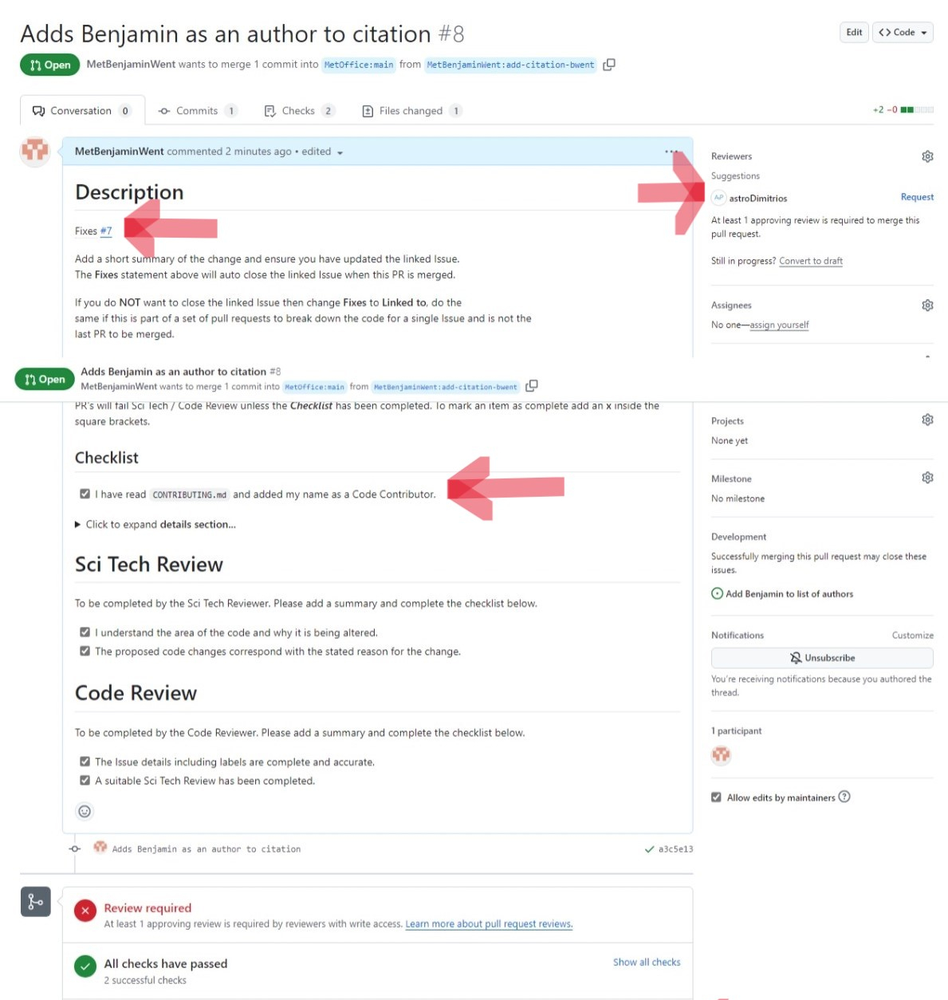

In this episode we will use the Feature Branch model to contribute to the git-training-demo repository.
You will need to get into pairs so that you can review each others code changes. Your instructor may have already paired you with another learner.
Cloning a Repository
You will both need to download a copy of the git-training-demo repository. This is called “cloning a repository”.
$ cd ~/Desktop$ git clone git@github.com:metoffice/git-training-demo.gitMake sure to navigate to the Desktop folder first.
Feature Branches
You can now make changes to the git-training-demo repository using your clone. We will use a feature branch to develop our change on:
$ cd git-training-demo
$ git switch -c 1_favourite_cloudSwitched to branch '1_favourite_cloud'Notice the name of the branch is prefixed by the number 1. This is the Issue number of the Issue you created in Episode 2 Issues. Your team may choose a different naming convention such as prefixing the branch name by feature, bug etc.
Add in a new file cloud-mo-fitzroy.md, replace mo-fitzroy with your username:
$ nano cloud-mo-fitzroy.md
$ cat cloud-mo-fitzroy.md# My Favourite Cloud
Light and fluffy cumulus.Add and commit your changes:
$ git add cloud-mo-fitzroy.md
$ git commit -m "Adds Robert Fitzroy's favourite cloud"[1_favourite_cloud b7f26e6] Adds Robert Fitzroy's favourite cloud
1 file changed, 3 insertions(+)
create mode 100644 cloud-mo-fitzroy.mdThen push the changes to GitHub:
$ git pushEnumerating objects: 4, done.
Counting objects: 100% (4/4), done.
Delta compression using up to 4 threads
Compressing objects: 100% (2/2), done.
Writing objects: 100% (3/3), 357 bytes | 178.00 KiB/s, done.
Total 3 (delta 1), reused 0 (delta 0), pack-reused 0
remote: Resolving deltas: 100% (1/1), completed with 1 local object.
remote:
remote: Create a pull request for '1_favourite_cloud' on GitHub by visiting:
remote: https://github.com/MetOffice/git-training-demo/pull/new/1_favourite_cloud
remote:
To github.com:metoffice/git-training-demo.git
* [new branch] 1_favourite_cloud -> 1_favourite_cloud
branch '1_favourite_cloud' set up to track 'origin/1_favourite_cloud'.Note that we didn’t have to create a remote called origin: Git uses this name by default when we clone a repository. This is why origin was a sensible choice in the git-novice lesson when we were setting up remotes by hand.
Take a look at the repository on GitHub again, and you should be able to see the 1_favourite_cloud branch. You may need to refresh your browser to see the new branch.
If you see a message similar to the following:
fatal: The current branch 1_favourite_cloud has no upstream branch.
To push the current branch and set the remote as upstream, use
git push --set-upstream origin 1_favourite_cloud
To have this happen automatically for branches without a tracking
upstream, see 'push.autoSetupRemote' in 'git help config'.You will need to set the name of the upstream GitHub branch using the recommended git push command.
You can get git to automatically set the upstream branch. This avoids having to run git push with the –set-upstream flag the first time you push from a new branch.
Change your git config using:
$ git config --global push.autoSetupRemote trueIn this episode and in the git-novice lesson, our local repository only had a single “remote”, called origin. A remote is a copy of the repository that is hosted somewhere else, that we can push to and pull from, and there’s no reason that you have to work with only one. For example, on some large projects you might have your own copy in your own GitHub account (you’d probably call this origin) and also the main “upstream” project repository (let’s call this upstream for the sake of examples). You would pull from upstream from time to time to get the latest updates that other people have committed. We will practice using an upstream repository later in the forking model.
Remember that the name you give to a remote only exists locally. It’s an alias that you choose - whether origin, or upstream, or mo-fitzroy - and not something intrinsic to the remote repository.
The git remote family of commands is used to set up and alter the remotes associated with a repository. Here are some of the most useful ones:
git remote -vlists all the remotes that are configured (we already used this in the last episode)git remote add [name] [url]is used to add a new remotegit remote remove [name]removes a remote. Note that it doesn’t affect the remote repository at all - it just removes the link to it from the local repo.git remote set-url [name] [newurl]changes the URL that is associated with the remote. This is useful if it has moved, e.g. to a different GitHub account, or from GitHub to a different hosting service. Or, if we made a typo when adding it!git remote rename [oldname] [newname]changes the local alias by which a remote is known - its name. For example, one could use this to changeupstreamtomo-fitzroy.
Open a PR
In the git-novice lesson you practised opening a pull request.
You should see a notification appear on GitHub telling you the 1_favourite_cloud branch had recent pushes. The Collaborator should click on the green Compare & pull request button to open the PR.
If you don’t see this notification click on the branches dropdown, the button showing main, and click on the 1_favourite_cloud branch.

You should now see the Code view for the 1_favourite_cloud branch and a Contribute button. Click on the Contribute button and select the green Open pull request option.

You may have noticed when running git push on the 1_favourite_cloud branch for the first time the output contained:
remote: Create a pull request for '1_favourite_cloud' on GitHub by visiting:
remote: https://github.com/MetOffice/git-training-demo/pull/new/1_favourite_cloudYou could have also followed this link to create a new PR. We recommend you always open a draft PR after your first push. This gives you access to a diff of your changes against the target branch (usually main). When the changes are ready for review you can mark the PR as Ready for review.
Pull Request Templates
Notice the description has filled with a template. Just like this repository used Issue templates it also uses a PR template.
This template has a checklist that needs to be completed before opening the PR1. It also has checklists for science and code review. In the description scroll down to the checklists which look like this:
- [ ] I have read `CONTRIBUTING.md` and added my name as a Code Contributor.Some open source projects require you to add your name to a list of contributors. We will do this later so for now mark the task as complete. Replace the space in the square checkbox brackets with an x to mark the task as complete:
- [x] I have read `CONTRIBUTING.md` and added my name as a Code Contributor.Now when you open the PR it should look something like this:

This image shows PR number #8. This PR will close/fix Issue number #7 (the top left arrow). You can request a review on the top right. Some repositories will be set up to automatically assign a reviewer based on how many reviews each team member currently has open2. The bottom arrow shows the checklist items we marked as complete.
At the bottom of your PR you can see that a review is required before merging. All checks have passed, this repository has automatic checks for trailing whitespace, accidentally adding large files etc. More information can be found in the optional episode on pre-commit hooks.
Help: Some checks have failed
If your now open Pull Request says some checks have failed this is because your changes did not pass the automatic pre-commit checks.
Click on the Details link next to the failed test and fix your code on your local repository. Commit and then push this fix to GitHub. Your PR will automatically update and re-run the tests, you may need to refresh the page.
Automatically closing Issues via PRs
A PR can automatically close an Issue when it is merged into main. To use this GitHub functionality replace the templates Fixes <#ISSUE_NUMBER> line with either:
Closes #1or
Fixes #1Make sure you change 1 to your Issue number. The GitHub Documentation has more information on linking PRs to Issues.
In the next episode we will look at how these changes are reviewed and merged back into main in more detail.
Assign a Reviewer
Assign the other learner in your pair as the reviewer by clicking on the cog to the right of the Reviewers section.
On the right hand side of the PR you can also:
- Assign yourself to the PR.
- Add labels to the PR.
- Add the PR to a Project by clicking on the cog next to the Projects section. (If you don’t see a project related to the training you might not have been granted permissions, ask your instructors for help)
- Assign the PR to a milestone.
Keypoints
- Cloning a repository gives you a local copy of the repository:
git clone <repository> <directory> - Automatically close Issues when a PR is merged by adding a
Closes #<Issue number>line to the first comment in the PR. - Pull Request templates provide template text for the first comment for new Issues of various types, and Pull Requests. They can auto-label Issues and encourage collaborators to give plenty of detail.
Footnotes
You can also open a draft PR and then edit the top comment to mark the checklist tasks as completed.↩︎
The GitHub Documentation has more information on automatically assigning reviewers.↩︎